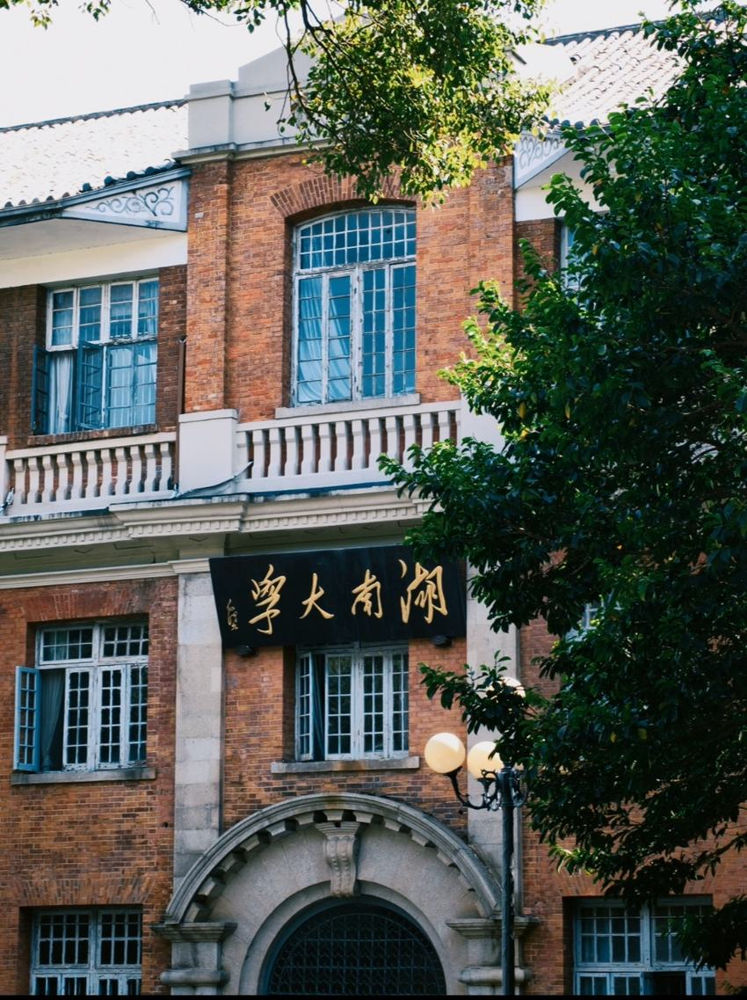
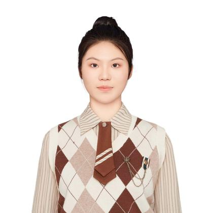

PRIORITY 01
ESG 与行业研究
关注企业 ESG 发展政策、行业趋势与驱动因素，尝试把企业实践放入行业环境中分析，并形成有结构的研究报告。
RESEARCH EXPERIENCE地产行业 ESG 发展研究
OUTPUT行业发展报告与提升建议
APPROACH资料梳理 · 趋势分析 · 研究表达
湖南大学 · 金融学本科
目前就读于湖南大学金融学。曾参与地产行业 ESG 研究并撰写行业发展报告，同时有银行基础业务实习、线上观点调查与项目文书协作经历。


“我希望从具体行业和企业实践出发，观察可持续发展议题如何落在真实的经营活动中。”
金融学课程为我提供了经济学、统计学与计量分析的基础。在兴业证券的远程实习中，我围绕地产行业 ESG 发展水平开展资料梳理和行业分析，完成了一份行业发展报告。
在兴业银行武汉分行实习期间，我学习银行基础业务和系统操作；在校园项目与线上研究中，我也积累了文书整理、意见归纳和团队协作经验。
以实际经历为线索，持续深化行业观察、研究表达与金融业务理解。
关注企业 ESG 发展政策、行业趋势与驱动因素，尝试把企业实践放入行业环境中分析，并形成有结构的研究报告。
从基础业务和系统操作出发，理解银行日常运营流程及理财、银行卡等业务的基本环节。
通过公开讨论、评论和私信收集不同地区的观点，做好信息记录、材料整理与反馈归纳。
以下时间与描述依据上传简历整理。
实习生
学习银行基础业务，包括理财业务、银行卡业务等，熟悉银行基础系统操作，并协助导师和同事办理日常业务。
远程实习生 · ESG 研究
运用基础行业研究方法分析地产行业 ESG 发展水平，梳理头部企业的相关政策、发展趋势与内外部驱动因素，并完成行业发展报告及提升建议。
书记员
负责计划书文书整理与撰写，筹备、审核并修改小组成员产出，协助组长完成计分工作。
小组成员
围绕巴以冲突中的跨地域观点开展线上调查，通过讨论帖、评论与私信收集看法，提供指定历史材料并追问观点，及时记录并归纳反馈。
金融学（本科）
主修课程：微宏观经济学、计量经济学、国际金融学、保险学原理、概率论和数理统计、高等数学 A、Python 基础。
熟练使用 Office；具备 Python 基础与统计、计量课程基础；大学英语四、六级（CET-4/6），能够阅读英语专业文件及书籍。
湖南大学统计建模比赛三等奖；2025 年国创赛省级铜奖。
工作与学习之外，我喜欢摄影与陶瓷手工。这里是我拍摄的花叶与第一次做的陶瓷手工。
PDF 版本按最新上传简历中的经历和时间整理。